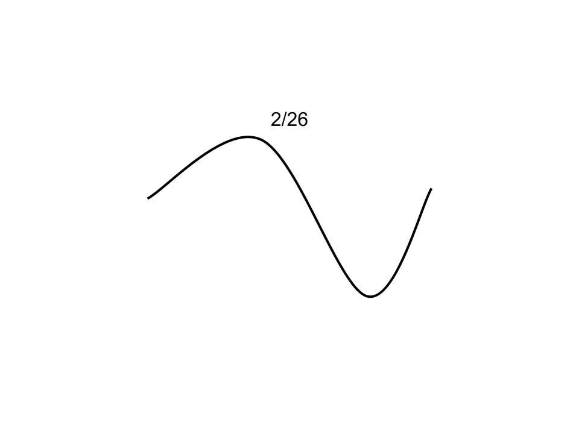

learning, 6/10
discussing, 7/10
procrastinating, 4/10
studying, 6/10
I like how this exercise gives you a chance to reflect on how your day went. To expand on this idea, it might be cool to draw out a simple graph, using time as the x-axis and the ratings as y-coordinates. Here is an idea of what that might look like:

Spotify has a feature called "Discover Weekly", in which it generates a new playlist for you every week, made of 30 songs you've never heard, but sound similar to your music taste. I try to listen to the full playlist every week, so I thought it might be a fun exercise to go back and pick out which songs were my favorite discoveries.
Now thanks to the aid of the ancestral spirits, the world has at last been pacified.
Protocols do not perform any interpretation themselves; that is, they encapsulate information inside various wrappers, while remaining relatively indifferent to the content of information contained within.
I like how this format forces you to take another look at material that you read, giving you another chance to enhance your understanding of things you read today. The first quote I selected is from the Shiji, an ancient text written by Sima Qian. This was required reading for an East Asian Studies course that I'm taking, which focuses on the Qin Dynasty. The second quote is from Protocol by Alexander Galloway, one of the required readings from this class.